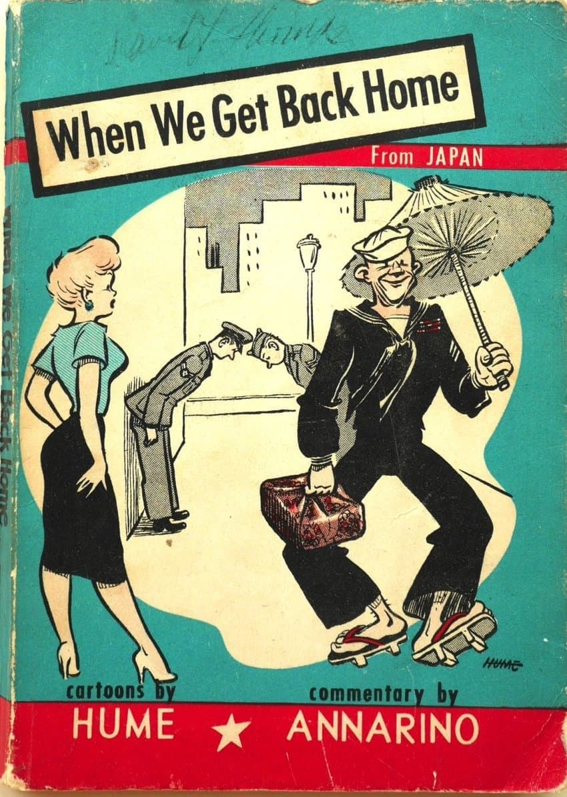
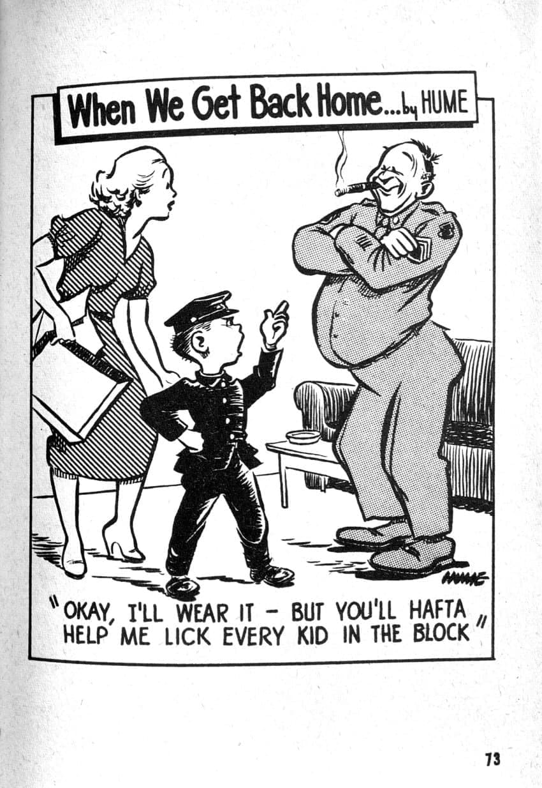
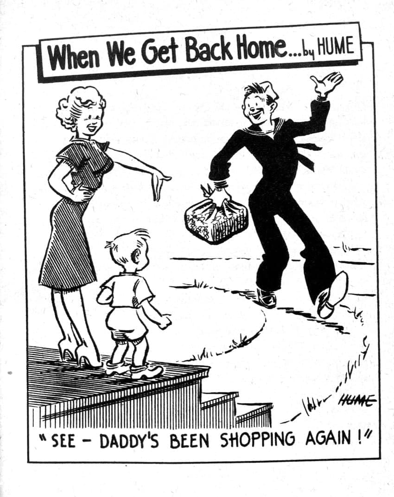
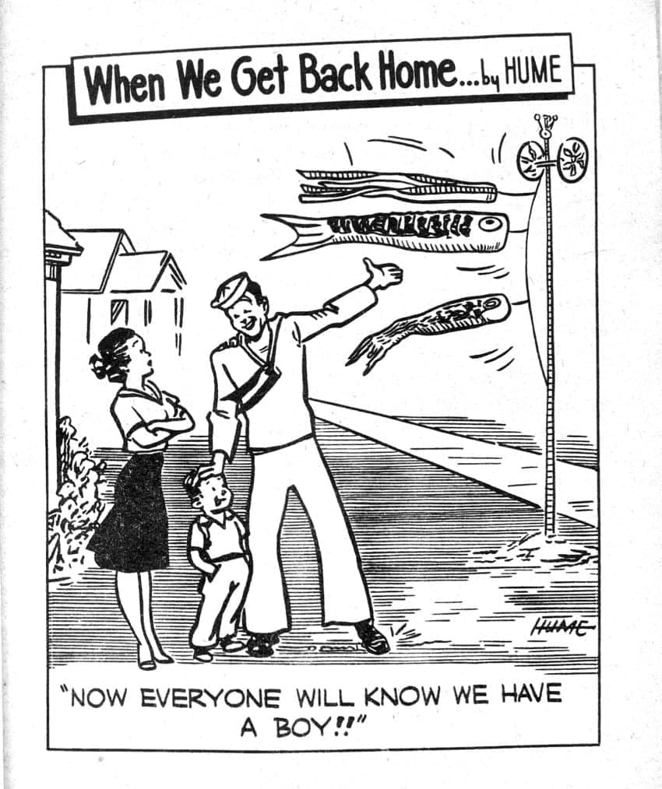
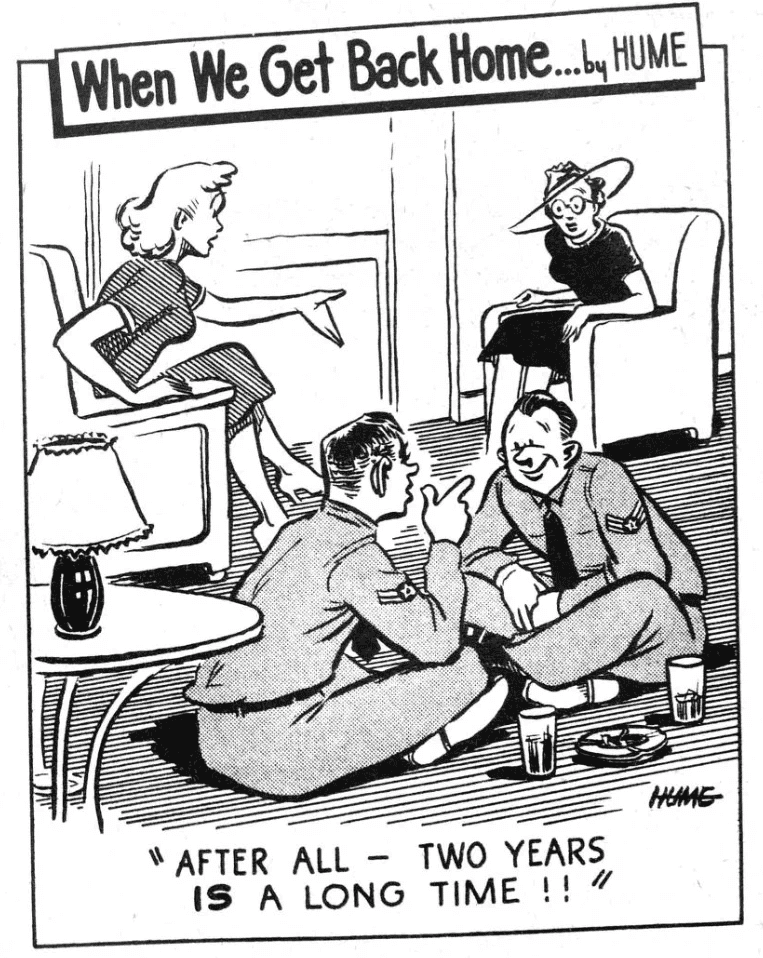
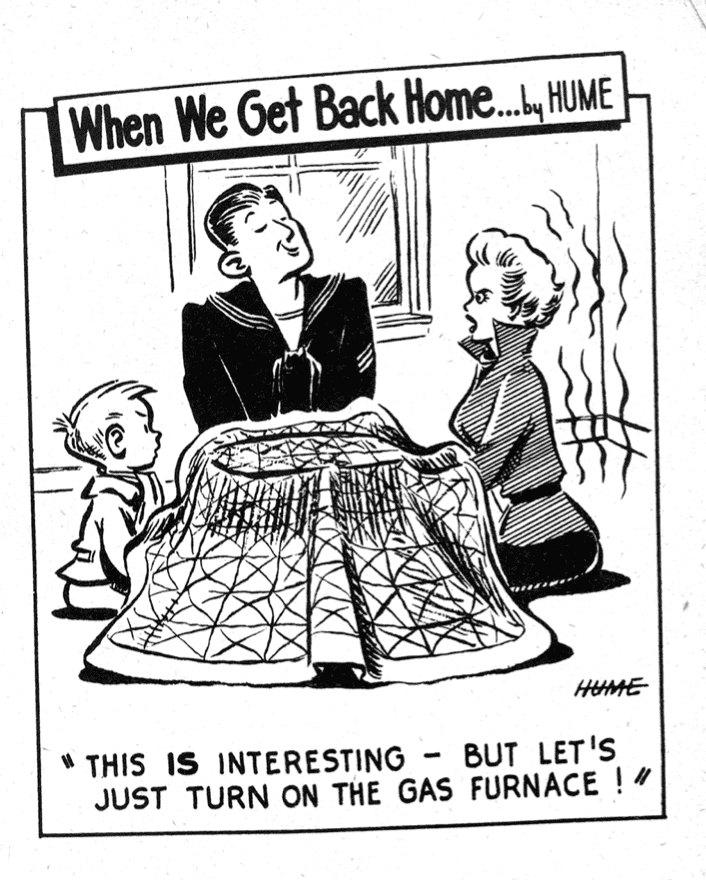
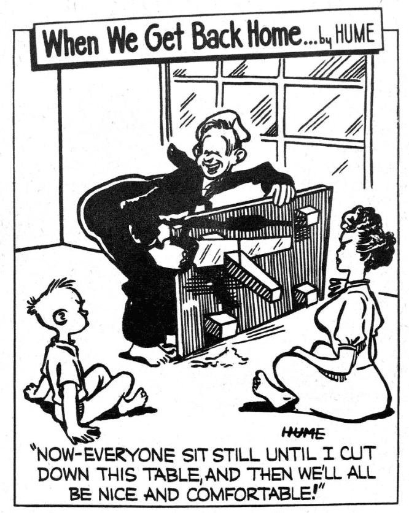
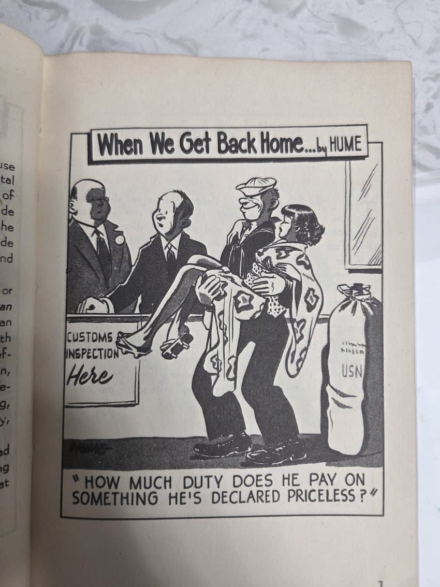
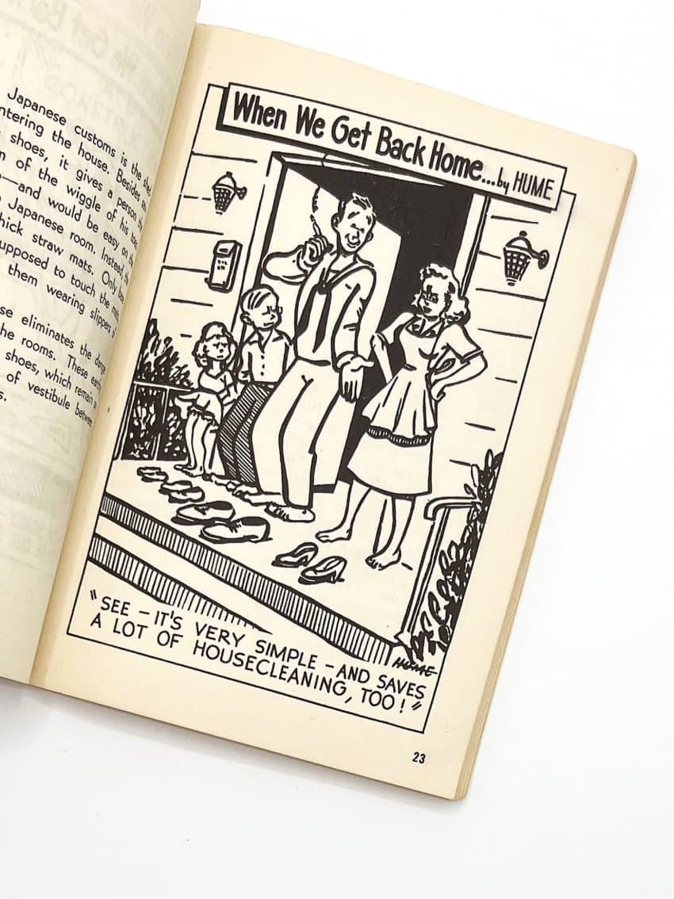

1950년에 나온 유머책
주일미군들이 본토로 귀환했을 때 있었던 풍경들을 과장되고 우화적인 그림체로 그려냄

자식에게 일본식 교복 입히기

'보따리' 문화 배워온 아빠

코이노보리(물고기 깃발) 장식한 아빠
날생선 먹는 법을 배워온 아빠

겨우 2년만에 좌식 습관을 배운 양반들

ㅋㅋㅋㅋ

식탁 (Japan)
일본에서 가져온 가게 장식물

아내 가져옴

우리 집에서는 앞으로 신발 벗고 집에 들어간다

댓글
수집 당시 댓글 130개
ㅇㅇ · 11.10 10:20:56
ㅇㅇ · 11.10 11:09:54
· ㅇㅇ · 11.10 15:19:53
MechWarrior · 11.10 11:40:57
ㅇㅇ · 11.10 13:17:27
ㅇㅇ · 11.10 15:39:06
꾸닝 · 11.10 19:34:35
ㅇㅇ · 11.11 11:55:10
· 안될거뭐있노. · 11.12 07:51:13
· ㅇㅇ · 11.12 08:03:58
· ㅇㅇ · 11.12 08:40:23
· ㅇㅇ · 11.12 17:21:29
ㅇㅇ · 11.11 21:32:19
· ㅇㅇ · 11.12 07:54:55
· 겐쉰프 · 11.12 08:45:31
· ㅇㅇ · 11.12 13:55:06
땨뗘(봇) · 11.12 07:50:05
ㅇㅇ · 11.12 07:51:35
ㅇㅇ · 11.12 07:53:51
ㅇㅇ · 11.12 07:54:18
ㅇㅇ · 11.12 07:55:31
ㅇㅇ · 11.12 07:57:08
· ㅇㅇ · 11.12 07:57:38
· ㅇㅇ · 11.12 08:00:42
광명설화 · 11.12 07:57:48
· ㅇㅇ · 11.12 08:04:55
ㅇㅇ · 11.12 07:59:54
ㅇㅇ · 11.12 08:00:20
· 소설쟁이 · 11.12 08:06:18
· ㅇㅇ · 11.12 11:36:06
ㅇㅇ · 11.12 08:00:51
ㅇㅇ · 11.12 08:01:57
ㅇㅇ · 11.12 08:07:40
ㅇㅇ · 11.12 08:07:52
ㅇㅇ · 11.12 08:09:19
ㅇㅇ · 11.12 08:11:46
ㅇㅇ · 11.12 08:12:07
ㅇㅇ · 11.12 08:12:14
ㅇㅇ · 11.12 08:16:34
· ㅇㅇ · 11.12 08:17:28
· ㅇㅇ · 11.12 08:19:47
· ㅇㅇ · 11.12 08:34:32
개죠센징
인 니가
왜자아의탁
하는거임?
· (⌒,_>⌒) · 11.12 08:42:09
· ㅇㅇ · 11.12 08:45:12
· ㅇㅇ · 11.12 09:09:09
짱깨라서
개죠센을
찾는다
· ㅇㅇ · 11.12 09:51:31
· ㅇㅇ · 11.12 13:27:26
ㅇㅇ · 11.12 08:17:04
ㅇㅇ · 11.12 08:18:17
ㅇㅇ · 11.12 08:20:54
· ㅇㅇ · 11.12 08:21:36
· 냉동 · 11.12 09:02:05
· ㅇㅇ · 11.12 13:27:17
· ㅇㅇ · 11.12 14:20:28
ㅇㅇ · 11.12 08:35:31
새벽에글쓰다가 · 11.12 08:36:19
ㅇㅇ · 11.12 08:38:31
ㅇㅇ · 11.12 08:41:43
· ㅇㅇ · 11.12 08:59:41
· ㅇㅇ · 11.12 08:59:53
· ㅇㅇ · 11.12 09:02:32
ㅇㅇ · 11.12 08:44:38
원또 · 11.12 08:57:43
ㅇㅇ · 11.12 09:01:07
· 레갤러 · 11.12 14:25:56
냉동 · 11.12 09:01:14
주갤럼 · 11.12 09:17:41
ㅇㅇ · 11.12 09:23:11
· ㅇㅇ · 11.12 09:48:03
ㅇㅇ · 11.12 09:27:59
· ㅇㅇ · 11.12 09:28:29
ㅇㅇ · 11.12 10:03:13
ㅇㅇ · 11.12 10:31:06
ㅇㅇ · 11.12 10:49:07
· ㅇㅇ · 11.12 16:56:59
ㅇㅇ · 11.12 10:54:55
· ㅇㅇ · 11.12 12:12:20
· ㅇㅇ · 11.12 12:16:32
ㅇㅇ · 11.12 11:07:04
펜도르 · 11.12 11:09:12
ㅇㅇ · 11.12 11:18:33
ㅇㅇ · 11.12 11:22:55
· ㅇㅇ · 11.12 13:56:45
ㅇㅇ · 11.12 11:46:04
ㅇㅇ · 11.12 12:03:33
ㅇㅇ · 11.12 12:13:55
ㅇㅇ · 11.12 12:16:52
ㅇㅇ · 11.12 12:53:02
ㅇㅇ · 11.12 13:44:52
ㅇㅇ · 11.12 14:20:59
ㅇㅇ · 11.12 14:24:36
레갤러 · 11.12 14:25:15
ㅇㅇ · 11.12 14:44:22
ㅇㅇ · 11.12 14:57:47
ㅇㅇ · 11.12 15:54:26
· ㅇㅇ · 11.12 15:55:38
ㅇㅇ · 11.12 16:42:50
ㅇㅇ · 11.12 16:44:14
ㅇㅇ · 11.12 16:50:51
ㅇㅇ · 11.12 17:14:09
ㅇㅇ · 11.10 09:27:36
ㅇㅇ · 11.10 09:29:22
ㅇㅇ · 11.10 09:30:13
· ㅇㅇ · 11.10 09:33:32
· Lumpen · 11.10 10:37:34
· ㅇㅇ · 11.12 08:01:35
· ㅇㅇ · 11.12 08:16:14
· ㅇㅇ · 11.12 08:17:26
· ㅇㅇ · 11.12 08:18:05
· ㅇㅇ · 11.12 08:32:25
· ㅇㅇ · 11.12 09:54:20
· 118.235 · 11.12 11:01:11
· ㅇㅇ · 11.12 12:10:16
· ㅇㅇ · 11.12 12:39:36
· ㅇㅇ · 11.12 12:41:04
· ㅇㅇ · 11.12 15:40:43
오줌기타 · 11.10 09:31:15
ㅇㅇ · 11.10 09:33:04
ㅇㅇ · 11.10 09:33:48
ㅇㅇ · 11.10 09:37:55
방사거북 · 11.10 09:44:18
마오쩌동 · 11.10 09:44:34
Су-47 · 11.10 09:45:16
· 아리에타 · 11.12 10:14:33
· ㅇㅇ · 11.12 15:23:26
· 아리에타 · 11.12 15:24:19
워치프 · 11.10 09:51:48
몬가몬가임 · 11.10 10:07:24
KOR0522-Petrus · 11.10 10:10:28
ㅇㅇ · 11.10 10:16:17